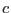

The logic of source detection goes as follows. Let us assume to begin with that there is no source at a given location, only background. Let us calculate the probability that the observed counts at that location are due solely to background. If this probability is less than a specified value, our initial assumption was incorrect and there is in fact a source at that location.
The routines described in the present section are designed to take as arguments the probability cutoff (actually a cutoff in likelihood is used) and the background, or expectation value for the counts, and use them to calculate the minimum value of source counts which is detectable at those levels.
To elaborate: given a discrete probability distribution of event counts , any sample value  is associated with a certain probability (and therefore likelihood
 ) of it not being due to chance. This probability is obtained by summing the probability values from to . For
) of it not being due to chance. This probability is obtained by summing the probability values from to . For  given by the Poisson distribution, this sum is equal to the incomplete gamma function , where
given by the Poisson distribution, this sum is equal to the incomplete gamma function , where  is the expectation value of . In mathematical terms, the Poissonian likelihood is thus
is the expectation value of . In mathematical terms, the Poissonian likelihood is thus
(Note: This is ONLY true if the uncertainty in the background or expectation value is insignificant.) The two subroutines described in the present section invert equation 1 to return that value of which is associated with specified  and
and  .
.